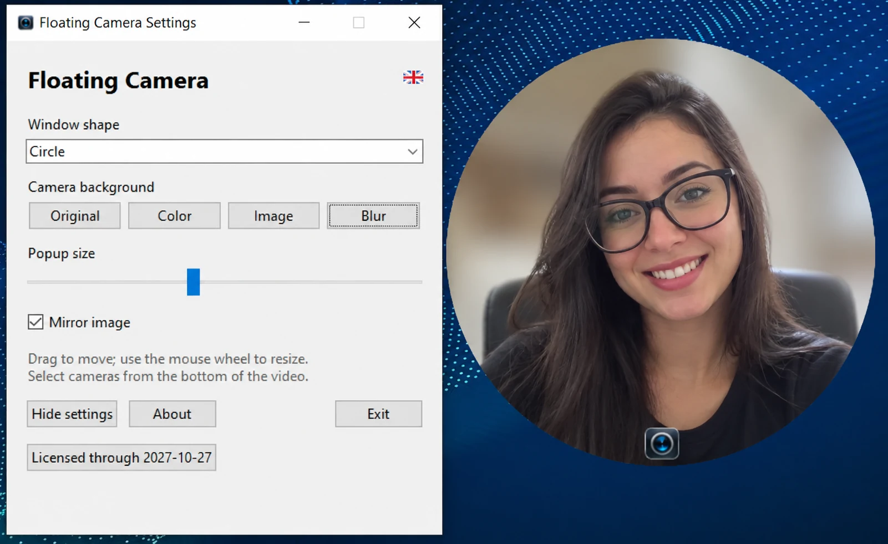

Floating camera
Keep your webcam overlay visible on top of slides, apps, and browsers.
Make your video presence part of every presentation, lesson, recording and demo — without covering your workspace.

Everything you need to stay on camera while keeping your screen free to work.
Keep your webcam overlay visible on top of slides, apps, and browsers.
Choose a circle, square, or triangle. Adjust the overlay to suit your screen.
Switch between original video, a solid color, an image or blur.
Select from available connected cameras using the overlay control.
Drag to reposition and use the mouse wheel to adjust the camera size.
Access settings and control the camera through the system tray.
An uncomplicated companion for online classes, tutorials, technical demonstrations and live presentations.
Built for anyone who wants a visible camera without constantly switching windows.
Explore the core experience before requesting a license for your device.
An opportunity to evaluate Floating Camera before licensing.
A 12-month license activated for your device.
Your video stays on your device. Camera processing is local. License requests currently happen through direct contact; the website does not process payments or issue licenses automatically.
Some quick answers before you get started.
The application is presented for Windows 10 and Windows 11.
Yes. The interface includes circle, square and triangle shapes.
A seven-day evaluation is offered by request. After that, you can inquire about an annual license.
Not yet. For now, please request the installer through the official contact channels.
English, Portuguese and Spanish. English is the default language.
Questions, licensing or partnership opportunities? Get in touch through an official L30 Technology channel.
Leonardo Bernardes da Silva
Developer · L30 Technology